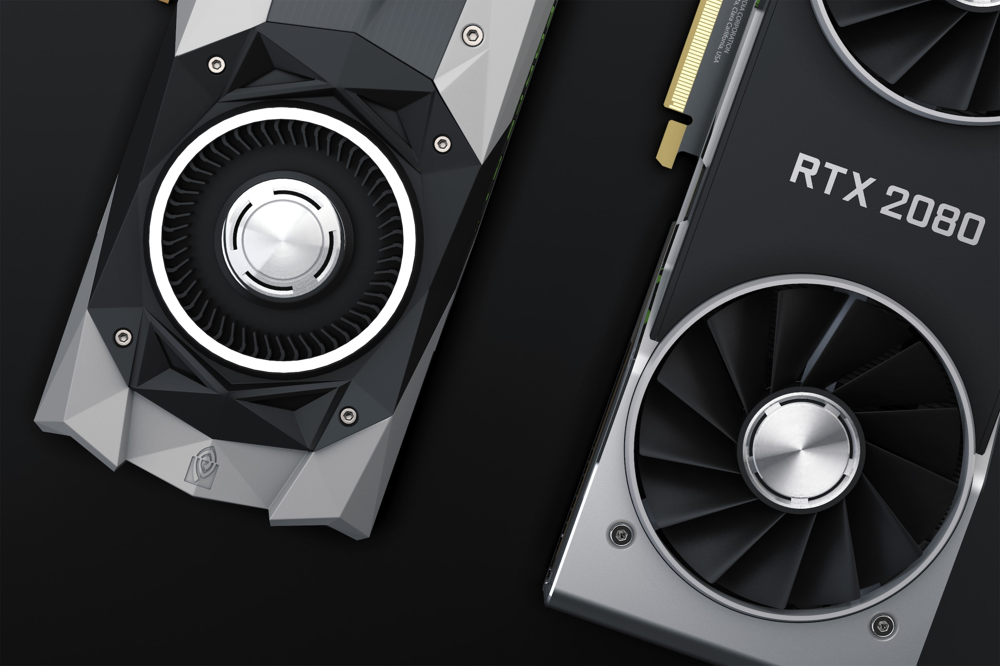
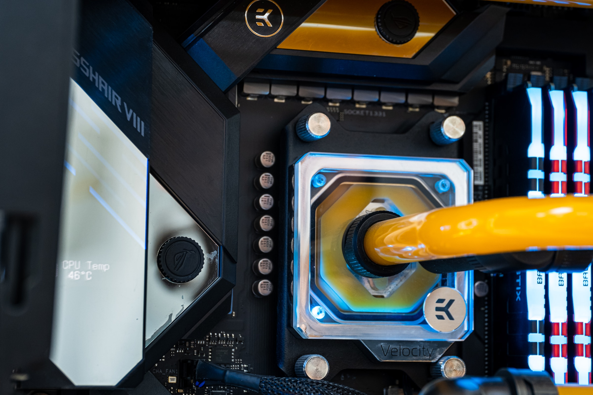
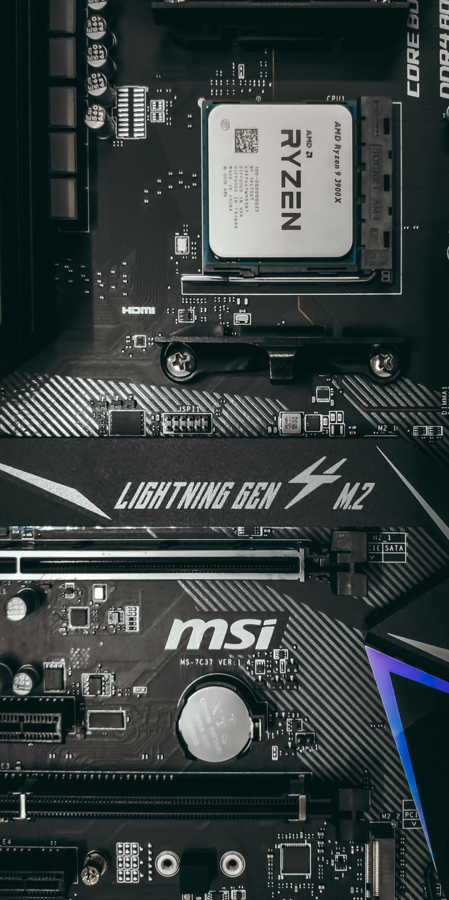
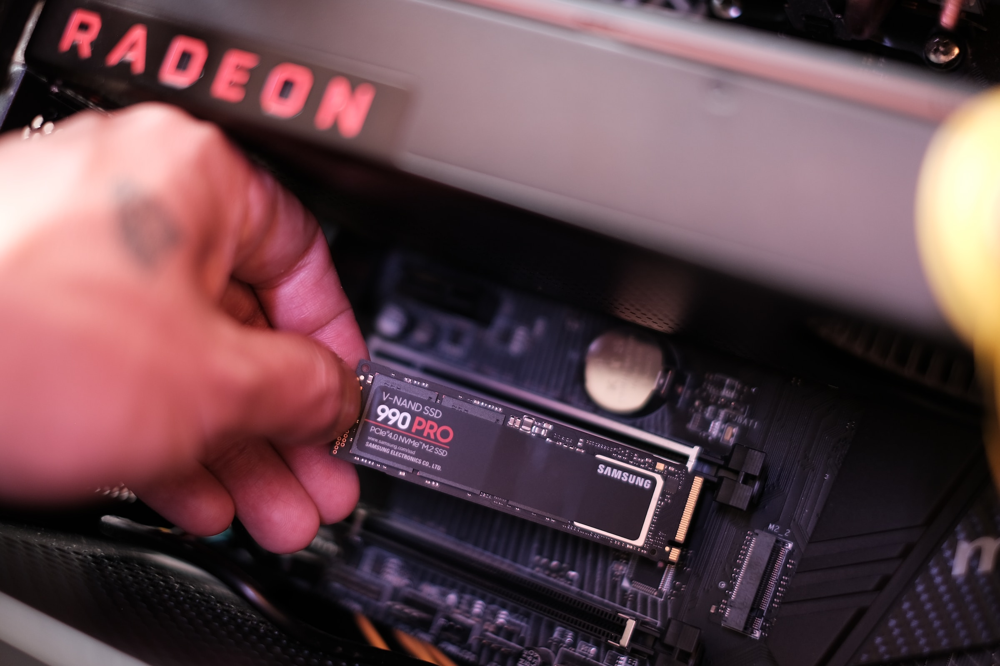

Wprowadzenie
Wybór odpowiednich komponentów do komputera jest kluczowym krokiem w budowie efektywnego i wydajnego systemu. Każda część pełni istotną rolę, a ich harmonijne dopasowanie może zdecydować o ogólnej wydajności i funkcjonalności komputera. Przyjęcie strategicznego podejścia do doboru podzespołów, takich jak procesor, karta graficzna, pamięć RAM czy dysk SSD, pozwala dostosować system do konkretnych zastosowań, od gier po profesjonalne zadania graficzne czy programowanie. W tym kontekście, zrozumienie kluczowych parametrów i technologii związanych z poszczególnymi komponentami staje się kluczowe, aby osiągnąć optymalną wydajność i zadowalające rezultaty. W dalszej części omówimy istotne aspekty, na które warto zwrócić uwagę podczas doboru części do komputera.
Karta graficzna
Karta graficzna to kluczowy element komputera odpowiedzialny za przetwarzanie i renderowanie obrazu. Jej rdzenie CUDA (NVIDIA) lub Stream Processors (AMD) odpowiadają za wydajność obliczeniową, decydując o płynności gier i efektywności w zastosowaniach graficznych. Pamięć VRAM wpływa na obsługę dużych projektów graficznych oraz wydajność w grach w wysokich rozdzielczościach. Szybkość taktowania GPU determinuje, jak szybko karta może wykonywać operacje. Technologie takie jak Ray Tracing i DLSS (NVIDIA) podnoszą realizm grafiki w grach. Kompatybilność z technologią FreeSync/G-Sync eliminuje zacinanie obrazu. Złącza wyjściowe, zużycie energii, a także rozmiar i chłodzenie są istotne przy wyborze, dostosowując kartę do konkretnych potrzeb użytkownika oraz specyfikacji systemu.
Na co zwrócić uwagę?
Proces technologiczny
Oznacza, ile nanometrów wynosi technologia produkcji GPU. Im mniejszy ten parametr, tym bardziej efektywna i wydajna jest karta graficzna.
Ilość rdzeni CUDA / Stream Processors
Liczba rdzeni obliczeniowych wpływa na ogólną wydajność karty. Więcej rdzeni zazwyczaj oznacza lepszą wydajność w zadaniach obliczeniowych.
Pamięć VRAM
Duża ilość pamięci VRAM jest ważna przy pracy z dużymi teksturami, modelami 3D i wysokimi rozdzielczościami. W przypadku gier, zwłaszcza w rozdzielczości 4K, zaleca się kartę z co najmniej 8 GB VRAM.
Rodzaj pamięci
GDDR6 jest obecnie jednym z najnowszych standardów i oferuje wyższą przepustowość niż wcześniejsze wersje, takie jak GDDR5
Szybkość taktowania
Oznacza, jak szybko pracuje GPU. Wyższe taktowanie zazwyczaj przekłada się na lepszą wydajność, ale nie jest jedynym kluczowym czynnikiem.
Technologie Ray Tracing i DLSS (NVIDIA)
Technologia śledzenia promieni (ray tracing) pozwala na bardziej realistyczne efekty świetlne w grach. Deep Learning Super Sampling (DLSS) to technologia, która wykorzystuje sztuczną inteligencję do poprawy jakości obrazu przy mniejszym obciążeniu GPU.
Zużycie energii i zasilanie
Sprawdź, czy zasilacz w twoim systemie spełnia wymagania karty graficznej pod względem mocy i złącz zasilających.
Rozmiar i chłodzenie
Upewnij się, że karta mieści się w obudowie komputera. Dobre chłodzenie jest kluczowe dla utrzymania niskich temperatur podczas intensywnego obciążenia.
Generacja PCIe:
Sprawdź, czy karta obsługuje daną generację PCIe (np. PCIe 3.0, PCIe 4.0). Wybierając nowoczesną kartę, warto korzystać z najnowszej generacji dla zwiększenia przepustowości.
Opinie i recenzje
Przed zakupem karty graficznej zaleca się gruntowne zbadanie opinii i recenzji, a także analizę różnorodnych benchmarków. Oceny użytkowników oraz ekspertów pomagają w zrozumieniu rzeczywistego doświadczenia z produktu, podczas gdy benchmarki dostarczają obiektywnych danych dotyczących wydajności. Ten holistyczny proces pozwala na dokładne zrozumienie, czy dana karta spełni oczekiwania, zarówno pod kątem gier, jak i profesjonalnych zastosowań graficznych, i zapewnia pewność co do ostatecznego wyboru.
Procesor
Procesor, nazywany mózgiem komputera, pełni kluczową rolę w przetwarzaniu danych. Jego moc obliczeniowa, wyrażona w ilości rdzeni i wątków, wpływa na płynność działania systemu. Producenci oferują różne linie procesorów, np. Intel i AMD, które są dostosowane do różnych zastosowań. Procesory o wyższej częstotliwości zegara sprawdzają się w grach, podczas gdy modele wielordzeniowe są skuteczne w zadaniach wielowątkowych, takich jak renderowanie grafiki 3D czy kompilacje programów. Przy wyborze procesora warto także zwrócić uwagę na architekturę, pamięć cache oraz kompatybilność z płytą główną.
Na co zwrócić uwagę?
Liczba Rdzeni i Wątków:
Im więcej rdzeni i wątków, tym lepsza wydajność w zadaniach wielozadaniowych i wielowątkowych. Procesory wielordzeniowe są korzystne przy renderowaniu, kompilacji kodu czy obróbce grafiki.
Częstotliwość Zegara:
Wyższa częstotliwość zegara przekłada się na szybsze wykonywanie pojedynczych zadań. To istotne w grach i zadaniach, które korzystają z pojedynczego wątku.
Pamięć Cache:
Większa pamięć cache przyspiesza dostęp do danych, co ma znaczenie dla ogólnej wydajności procesora. L2 i L3 cache są szczególnie ważne.
TDP (Thermal Design Power):
Oznacza ilość energii, jaką procesor generuje podczas pełnej pracy. Wybieraj procesory o odpowiednim TDP, aby uniknąć problemów z chłodzeniem.
Kompatybilność z Płytą Główną:
Upewnij się, że procesor jest zgodny z płytą główną. Nowe procesory mogą wymagać aktualizacji BIOS-u.
Architektura:
Nowoczesne architektury, takie jak Zen od AMD czy Core od Intel, wprowadzają poprawki w efektywności energetycznej i ogólnej wydajności.
Zastosowanie:
Wybierz procesor odpowiedni do planowanych zastosowań. Procesory gamingowe różnią się od tych dedykowanych do profesjonalnych zastosowań graficznych czy programowania.
Technologie Dodatkowe:
Sprawdź, czy procesor obsługuje nowoczesne technologie, takie jak Hyper-Threading, SMT (Symmetrical Multi-Threading), czy AMD Ryzen Master.
GPU Zintegrowane (w przypadku APU):
W przypadku procesorów z zintegrowanym układem graficznym (APU), zwróć uwagę na wydajność GPU, jeśli nie planujesz korzystać z karty dedykowanej.
Opinie i Recenzje:
Przed zakupem procesora zaleca się nie tylko opinię użytkowników, ale także sprawdzenie wyników benchmarków. Analiza testów wydajności, porównań z innymi modelami oraz recenzji zawierających konkretne dane pozwoli uzyskać kompleksowe i obiektywne spojrzenie na potencjalne osiągnięcia danego procesora. Dzięki temu możesz dokładnie ocenić, czy dany model spełnia Twoje oczekiwania pod względem wydajności w różnych zastosowaniach, od gier po zadania profesjonalne.
Krótki podział procesorów
1. Procesory Entry-Level (np. Intel Core i3, Ryzen 3):
Zastosowanie ogólne: Doskonałe do codziennych zadań, przeglądania internetu, obsługi multimediów.
Praca biurowa: Skorzystaj z tych procesorów do standardowych zadań biurowych.
2. Procesory Średniej Klasy (np. Intel Core i5, Ryzen 5):
Zastosowanie ogólne: Odpowiednie do pracy biurowej, multitaskingu i lekkich zastosowań graficznych.
Gaming: Zapewniają dobrą wydajność w grach, szczególnie przy rozdzielczościach do 1080p.
3. Procesory Wyższej Klasy (np. Intel Core i7/i9, Ryzen 7/9):
Zastosowanie ogólne: Odpowiednie do zaawansowanej pracy biurowej, edycji multimediów, programowania i gier.
Gaming: Zapewniają doskonałą wydajność w grach, zwłaszcza w rozdzielczościach 1440p i 4K.
Przy zastosowaniach profesjonalnych: Nadają się do profesjonalnych zastosowań graficznych, takich jak obróbka wideo czy renderowanie grafiki 3D.
4. Procesory Wielordzeniowe / Threadripper (np. Ryzen Threadripper):
Zastosowania profesjonalne: Idealne do profesjonalnego renderowania grafiki, przetwarzania wideo, pracy z dużymi zestawami danych.
Zadania wielowątkowe: Zapewniają doskonałą wydajność w zadaniach, które korzystają z wielu rdzeni i wątków.
Tworzenie i edycja treści: Nadają się do zaawansowanych zastosowań w dziedzinie kreatywności i produkcji treści.
Chłodzenie procesora
Podczas doboru chłodzenia do procesora warto wziąć pod uwagę kilka kluczowych czynników, a wybór między chłodzeniem wodnym a powietrznym zależy od indywidualnych preferencji, potrzeb oraz budżetu.
Chłodzenie powietrzne
Plusy
1. Koszt
Chłodzenie powietrzne jest zazwyczaj tańsze niż jego odpowiednik wodny.
2. Prosta Instalacja
Montaż jest zwykle prostszy, co jest korzystne dla mniej doświadczonych użytkowników.
3. Prosty w utrzymaniu
Nie ma potrzeby uzupełniania płynu chłodzącego, co sprawia, że chłodzenie powietrzne jest mniej wymagające w utrzymaniu.
Minusy
1. Gabaryty
Duże chłodnice mogą ograniczać dostęp do przestrzeni w obudowie, zwłaszcza w mniejszych konstrukcjach.
2. Ograniczenie wydajności
W przypadku bardziej zaawansowanych zastosowań, takich jak intensywne overclocking, chłodzenie powietrzne może osiągnąć swoje granice wydajności.
Chłodzenie wodne
Plusy
1. Wydajność
Chłodzenie wodne często oferuje wyższą wydajność chłodzenia, szczególnie w przypadku zaawansowanych modeli z dużymi radiatorami.
2. Estetyka
Chłodzenie cieczą może dodatkowo wpłynąć na estetykę komputera, zwłaszcza gdy wykorzystuje się kolorowy płyn czy podświetlenie LED.
3. Opcje Dostosowania
Istnieje możliwość dostosowania konfiguracji chłodzenia cieczą do indywidualnych potrzeb, co jest korzystne dla entuzjastów.
Minusy
1. Koszt
Chłodzenie wodne zwykle jest droższe niż chłodzenie powietrzne, zwłaszcza w przypadku zaawansowanych systemów.
2. Słabsza Trwałość
W niektórych przypadkach chłodzenie wodne może być bardziej podatne na awarie niż chłodzenie powietrzne, szczególnie w związku z możliwością wycieku płynu chłodzącego.
Pamięć RAM
RAM, czyli Pamięć Dostępu Przypadkowego (ang. Random Access Memory), to rodzaj pamięci komputerowej, która jest używana do przechowywania tymczasowych danych potrzebnych przez procesor w trakcie działania systemu operacyjnego oraz uruchomionych programów. Odpowiada za szybki dostęp do informacji, które są bieżąco przetwarzane przez komputer. RAM umożliwia efektywne wykonywanie wielu operacji jednocześnie, a większa ilość pamięci RAM zazwyczaj przekłada się na lepszą wydajność systemu, zwłaszcza w przypadku zadań wymagających dużej ilości danych do jednoczesnego przechowywania, takich jak gry, edycja multimediów czy obsługa wielu aplikacji jednocześnie.
Na co zwrócić uwagę?
Standard pamięci
Wybieraj pamięci RAM z najnowszymi standardami, takimi jak DDR4 lub DDR5, biorąc pod uwagę kompatybilność z płytą główną.
Prędkość MHz
Im wyższa prędkość RAM, tym lepsza wydajność w wielu zastosowaniach, zwłaszcza w grach. Jednak warto dostosować prędkość do specyfikacji obsługiwanej przez płytę główną.
Opóźnienia CAS Latency (CL)
Niskie opóźnienia przyczyniają się do szybszej responsywności pamięci. Przy podobnych prędkościach warto wybierać moduły z niższym CL.
Pojemość
Wybierz odpowiednią pojemność RAM do planowanych zastosowań. Standardowo, 16 GB jest dobrym punktem wyjścia dla większości użytkowników, ale zadania wymagające większej ilości pamięci mogą wymagać 32 GB lub więcej.
Kompatybilność z Płytą Główną
Upewnij się, że wybrany model RAM jest w pełni kompatybilny z płytą główną, uwzględniając ograniczenia dotyczące obsługiwanej pojemności i prędkości.
Profile XMP/DOCP
Moduły RAM z obsługą profili XMP (Extreme Memory Profile) lub DOCP (Direct Overclock Profile) ułatwiają dostosowanie parametrów pamięci, zapewniając łatwiejszy proces overclockingu.
Chłodzenie
W przypadku intensywnego użytkowania lub planowanego overclockingu, modele z dodatkowym chłodzeniem (np. radiatorami) mogą pomóc w utrzymaniu stabilnych temperatur.
Opinie Użytkowników
Przed zakupem pamięci RAM warto sprawdzić opinie innych użytkowników, aby uzyskać praktyczne informacje na temat nie tylko wydajności, ale także niezawodności danego modelu. Doświadczenia innych mogą pomóc w dokładniejszym zrozumieniu, jak dana pamięć sprawdza się w różnych scenariuszach użytkowania.
Płyta główna
Płyta główna, nazywana również motherboard, to kluczowy element komputera, który koordynuje i łączy wszystkie główne komponenty. Odpowiada za zapewnienie kompatybilności procesora, dostarcza złącza i porty dla różnych urządzeń, obsługuje pamięć RAM oraz pełni kluczową rolę w sprawnym funkcjonowaniu całego systemu komputerowego.
Na co zwrócić uwagę?
Kompatybilność z Procesorem
Upewnij się, że płyta główna jest w pełni kompatybilna z wybranym procesorem pod względem gniazda (Socket) i obsługi generacji.
Obsługa Najnowszych Technologii
Sprawdź, czy płyta obsługuje najnowsze technologie, takie jak PCIe 4.0, USB 3.2 Gen 2, czy WiFi 6, aby być przygotowanym na przyszłość.
Złącza i Rozszerzenia
Zapewnij wystarczającą ilość i różnorodność złącz, takich jak USB, HDMI, DisplayPort, M.2, aby sprostać potrzebom związanych z podłączaniem różnych urządzeń.
Sekcja Zasilania (VRM)
Dla entuzjastów i użytkowników planujących overclocking, warto zwrócić uwagę na jakość sekcji zasilania VRM (Voltage Regulator Module) na płycie głównej.
Chipset
Wybierz chipset, który spełnia Twoje potrzeby. Chipsety oferują różne funkcje, a bardziej zaawansowane mogą zapewnić dodatkowe możliwości, takie jak obsługa RAID, USB-C, czy więcej linii PCIe.
Format Płyty (ATX, MicroATX, Mini-ITX)
Zastanów się nad rozmiarem płyty głównej w kontekście rozmiaru obudowy. Płyty ATX oferują najwięcej opcji rozszerzeń, ale mniejsze formy, takie jak MicroATX czy Mini-ITX, są bardziej kompaktowe.
Obsługa Pamięci RAM
Sprawdź obsługę standardów pamięci RAM (DDR4, DDR5) oraz maksymalną pojemność i prędkość obsługiwaną przez płytę główną.
Kontrola Jakości i Opinie
Przeczytaj recenzje i opinie innych użytkowników, aby uzyskać informacje na temat jakości wykonania płyty, wydajności oraz stabilności działania.
Podsumowanie o MB
Podsumowując, dobór płyty głównej zależy od indywidualnych potrzeb, planów rozbudowy, a także technologii, które chcesz wykorzystać. Warto również przyszłościowo myśleć, aby płytę można było łatwo zaktualizować w razie konieczności.
Obudowa
Przy wyborze obudowy komputerowej warto zwrócić uwagę na kilka kluczowych aspektów, aby zapewnić odpowiednie warunki dla komponentów oraz ułatwić zarządzanie przewodami i chłodzeniem:
Najważniejsze aspekty w wyborze obudowy
Przepływ Powietrza:
Wybieraj obudowy z dobrze zaprojektowanym systemem przepływu powietrza, z odpowiednimi miejscami na wentylatory, aby utrzymać niskie temperatury wewnątrz obudowy.
Ilość Wentylatorów:
Sprawdź, ile wentylatorów można zamontować w obudowie. Dodatkowe wentylatory poprawią cyrkulację powietrza, co z kolei wpłynie na efektywne chłodzenie komponentów.
Rozmiar Obudowy:
Wybierz rozmiar obudowy zgodny z planowanym zestawem komponentów. Istnieją standardowe rozmiary, takie jak ATX, MicroATX i Mini-ITX, które różnią się przestrzenią dostępną dla komponentów.
Wejścia i Dziury na Kable:
Sprawdź dostępność i rozmieszczenie wejść i otworów na kable w obudowie. Dobre zarządzanie kablami poprawi estetykę wnętrza i ułatwi konserwację.
Miejsce na Chłodzenie Procesora (Cooler):
Upewnij się, że obudowa ma wystarczająco dużo miejsca na instalację chłodzenia procesora. W przypadku chłodzenia wodnego zwróć uwagę na kompatybilność z radiatorami.
Miejsce na Karty Graficzne:
Ocen, czy obudowa ma wystarczająco dużo miejsca na planowane karty graficzne, zwłaszcza jeśli są to modele o większych wymiarach.
Wydajność Akustyczna:
Jeśli zależy ci na cichym środowisku, zwróć uwagę na wydajność akustyczną obudowy. Dobrej jakości materiały izolacyjne mogą ograniczyć dźwięki generowane przez komponenty.
Łatwość Montażu Komponentów:
Sprawdź, czy obudowa umożliwia łatwy montaż komponentów. Systemy bez narzędziowego montażu i dobre rozmieszczenie śrub ułatwią budowę.
Dyski
Przy wyborze dysków do komputera warto zwrócić uwagę na kilka kluczowych kwestii, uwzględniając różne rodzaje dysków dostępnych na rynku:
Dyski SSD (Solid State Drive)
NVMe vs. SATA
NVMe (Non-Volatile Memory Express): Oferuje wyższe prędkości odczytu/zapisu w porównaniu do tradycyjnych dysków SATA. Stosowany głównie jako dyski systemowe ze względu na swoją znakomitą wydajność.
SATA (Serial ATA): Mniej wydajne niż NVMe, ale wciąż znacznie szybsze niż tradycyjne HDD. Nadal dobre jako dyski do przechowywania danych i programów.
Temperatury i Radiatory (NVMe)
Dyski NVMe mogą generować większe ilości ciepła niż tradycyjne dyski SATA. Rozważ zakup modelu z radiatorami lub zaplanuj odpowiednią wentylację w obudowie.
Dyski HDD (Hard Disk Drive)
Rola HDD jako Magazynu
Dyski HDD są nadal używane jako magazyny na duże ilości danych, zwłaszcza tam, gdzie duże pojemności są bardziej istotne niż szybkość odczytu/zapisu.
Kierunki Ogólne
Pojemność
Wybierz pojemność odpowiednią dla Twoich potrzeb. Dyski SSD są dostępne w różnych rozmiarach, a większa pojemność zapewni więcej miejsca na system operacyjny, programy i pliki.
Szybkość Odczytu/Zapisu
Jeśli wydajność jest kluczowa, skup się na prędkości odczytu/zapisu. W przypadku SSD warto inwestować w NVMe dla lepszej wydajności w porównaniu do standardowych dysków SATA.
Technologie Cache
Niektóre dyski SSD oferują technologie cache, takie jak SLC lub TLC, które mogą poprawić wydajność w określonych zastosowaniach.
Trwałość (SSD)
Przy wyborze dysków SSD zwróć uwagę na parametr TBW (Total Bytes Written), który wskazuje, ile danych można zapisać na dysku przed potencjalną awarią.
Zakończenie
Oczywiście, zawsze warto podkreślać, że moje porady powinny być traktowane jako wskazówki lub ciekawostki, a nie jako absolutna pewność. W analizie danych ważne jest uwzględnienie różnych źródeł informacji i kontekstu. Dlatego zalecam również konsultację innych źródeł i potwierdzenie informacji przed podjęciem decyzji.
Warto zaczerpnąć tej opinii.